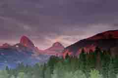
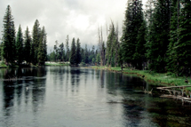
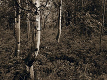

Eastern Idaho Photographic Society


©Roger Heng Oxbow Grand Teton National Park
The Caribou-Targhee National Forests in our area is 1.8 million acres and part of the Greater Yellowstone Ecosystem. Caribou Targee
is bounded by Yellowstone on the Northeast and Grand Teton on the east.
We primary use the Targhee portion of the forest.
The forest's lands include several mountain ranges, sagebrush-dotted plains, and arid highlands.
The photographs of wildlife and scenery make Targee a popular photographic location for members.
Please note: The roads are closed in the winter but open to snowmobiles.
Information on fall colors for the entire United States is available by calling United States Forest Service Fall Color
Report 1-800-354-4595[only in the fall]. or a web page
|  |  |
 |
 |
Tetons as Viewed from Idaho |
Sticky Geranium Flower |
Mesa Falls |
Henry's Fork Snake River |
© Sue Heng |
© Roger Heng |
© Christopher Leavell 2008 |
© David Gale |
|  |  |
 |
 |
Big Springs |
Visitor Center Mesa Falls |
Trumpet Flowers |
Aspen Trees |
© David Gale |
© Sue Heng 2008 |
© Jamie Gale |
© Christopher Leavell 2008 |
Photo Locations and Other Links
National Parks| Monument and Reserve| Bureau of Land Management| National Forests| Near By Ghost Towns| Near By Wildlife Refuges| Weather| Sunrise/Sunset Times | Photographers/Photo Clubs
Photographs Copyright© Photographer, Owner, or Eastern Idaho Photographic Society. Photographs
may not be reproduced in any manner without written permission.
Web Page Copyright© 2011 Eastern Idaho Photographic Society